本书作者：测试开发刚哥，文章版权归个人所有，未经授权请勿转载。
teprunner 测试平台已经有一个多月没有更新了，主要原因是定时任务不够稳定，经过反复试错，找到了解决办法，这次终于稳定了。
本文开发内容
作为测试平台而言，定时任务算是必备要素了，只有跑起来的自动化，才能算是真正的自动化。本文将给测试计划添加定时任务功能，具体如下：
- 前端添加测试计划的定时任务开关
- 采用 crontab 表达式设置计划时间
- 后端集成 django-apschedule，在数据库中记录任务明细和执行详情。
- 定时清理执行记录。
前端效果图：
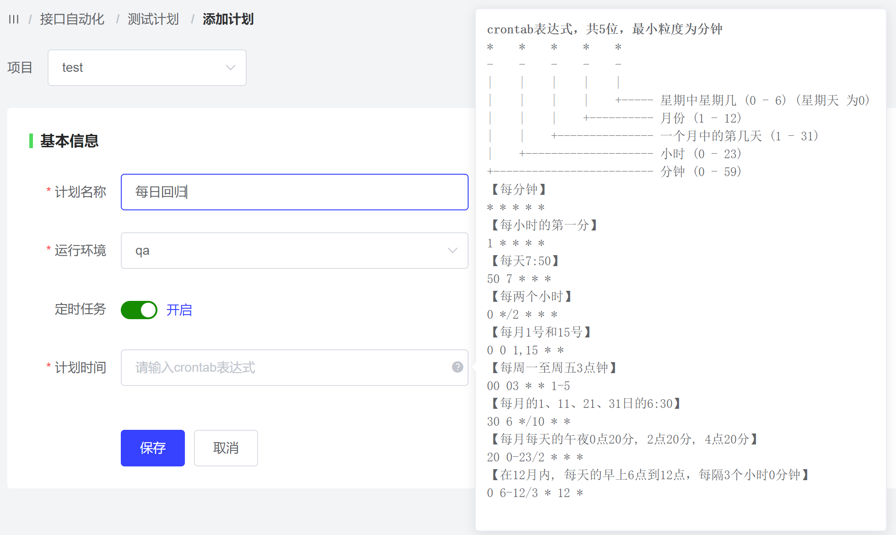
前端开发内容
编辑 src/views/teprunner/plan/PlanEditor.vue 文件：

运行环境用el-select实现了下拉框，用el-switch实现了开关按钮。

el-pophover实现了帮助描述，可以参考编写 crontab 表达式。
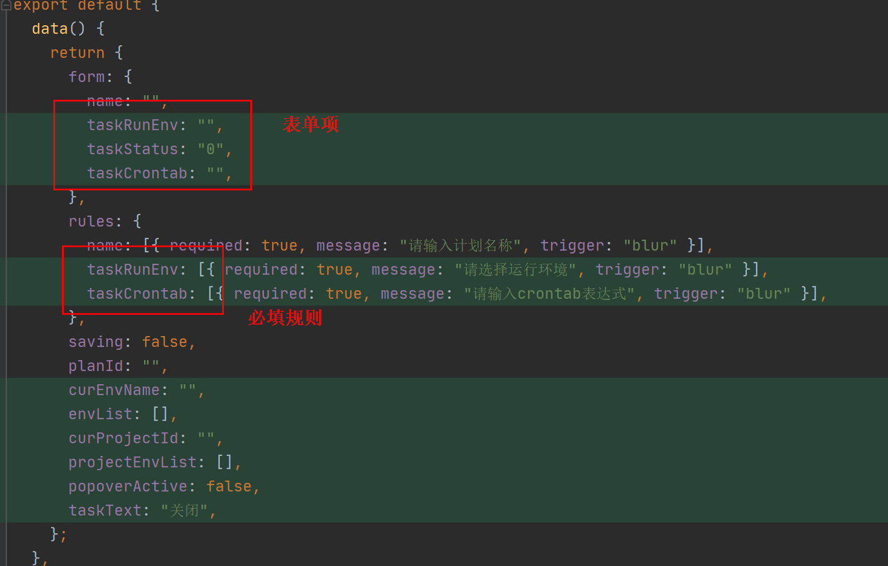
在 data 中添加了表单项 taskRunEnv、taskStatus、taskCrontab，必填规则，以及其他变量。
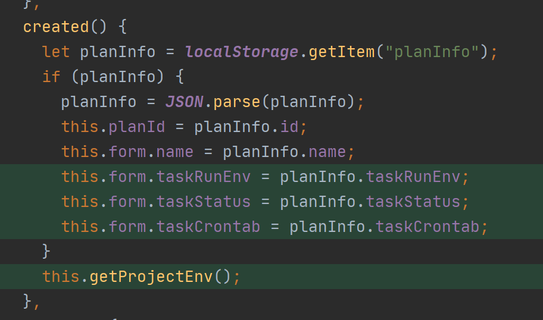
页面创建时读取 localStorage 中的计划信息。

并获取运行环境下拉框选项。

开关按钮的文字是根 taskStatus 进行设置的。
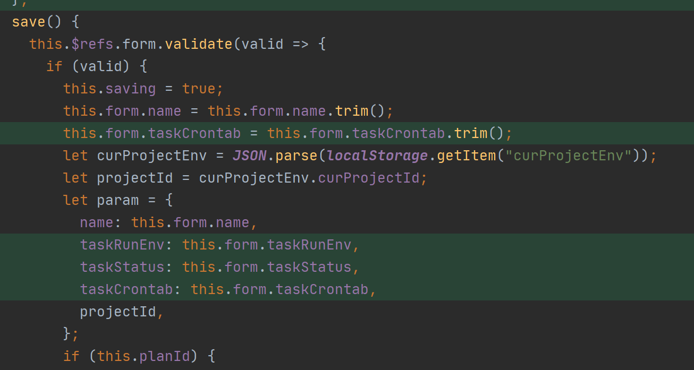
在保存时，给请求添加上新的这 3 个参数。
后端开发内容
第一步是安装 django-apscheduler，要么直接安装：
pip install django-apscheduler
要么更新项目代码后通过 requirements.txt 安装：
pip install -r requirements.txt
然后编辑 teprunnerbackend/settings.py 文件：

在 INSTALLED_APPS 中添加 django_apscheduler。
接着迁移数据库，创建两张任务表，一张任务明细表，一张任务执行情况表：
python manage.py migrate
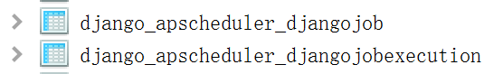
编辑 teprunner/models.py 文件：
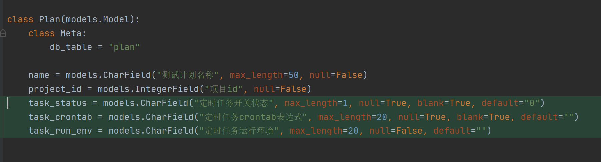
给 Plan 模型添加 3 个字段。
编辑 teprunner/serializers.py 文件：

同样的，给 PlanSerializer 添加 3 个字段。
新建 teprunner/views/task.py 文件：
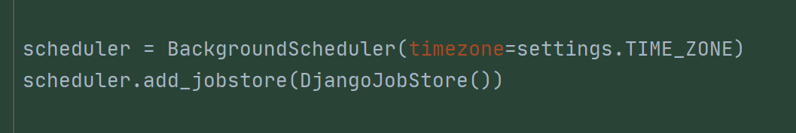
创建 BackgroundScheduler 的对象实例，Background 指的是在后台运行。并添加 DjangoJobStore，把任务通过 Django 保存到数据库中。
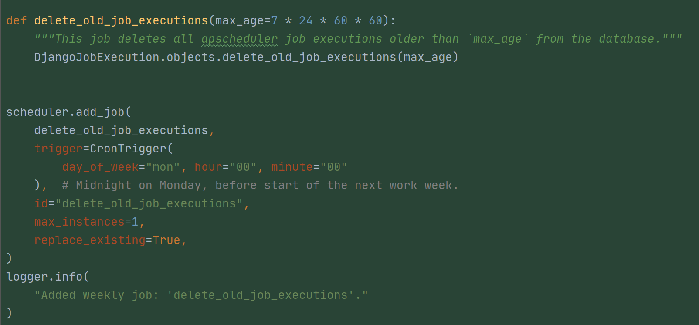
添加一个定时删除执行记录的任务，max_age 是最大保存时间，这里设置为 7 天。scheduler.add_job()用来添加定时任务，trigger 是触发器，也就是计划时间，这里设置为每周一 0 点。id 是任务的标识符。max_instances 指同时最多只有一个实例。replace_existing 设置为 True，每次都更新已存在的任务，防止重启服务导致 scheduler.add_job()报错。
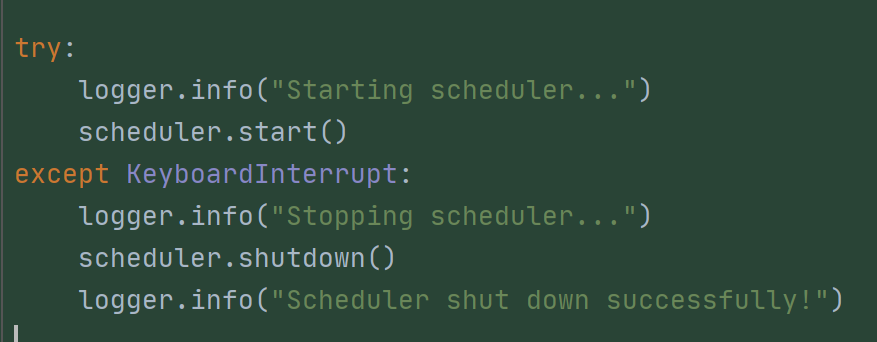
启动任务。
编辑 teprunner/views/run.py 文件：

为了手动执行测试计划和定时任务执行测试计划共用，这里把执行代码抽取了部分作为 run_plan_engine()函数。
编辑 teprunner/views/plan.py 文件：
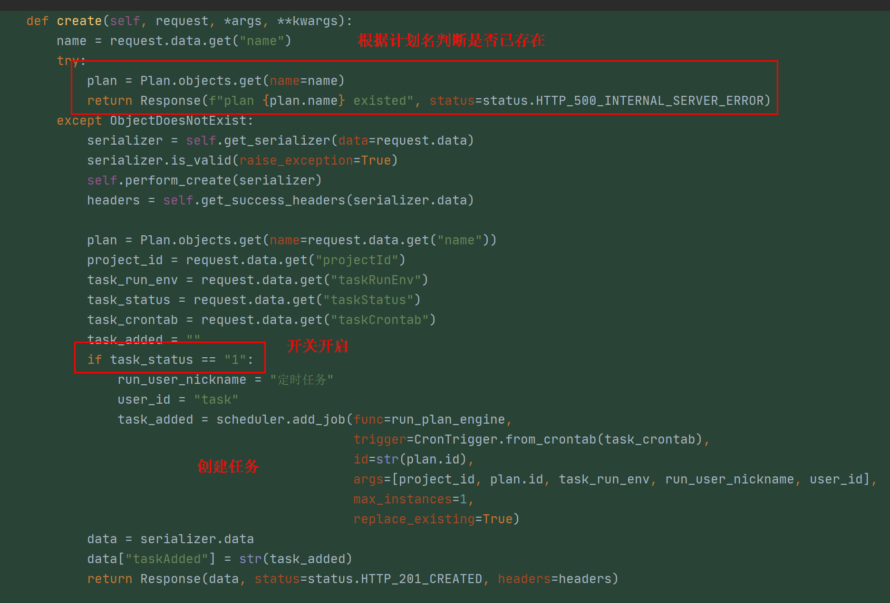
重写 create 方法，先根据测试计划的名字判断是否已存在，如果存在就直接返回 500。接着判断开关如果开启，那么就通过 scheduler.add_job()添加任务。跟刚才添加任务的有点区别是，通过 args 参数指定了 func 函数的参数。最后把任务添加日志写到响应中返回。

重写 update 方法，先判断测试计划是否已经存在，判断规则是根据名字去查找已存在记录，如果找到同名计划，且 id 不是自己，那么就认为已存在同名计划，直接返回 500。

然后判断如果开关打开，就新增任务；如果开关关闭，就删除任务，删除任务使用 scheduler.remove_job()。

最后重写 destroy 方法，在删除测试计划时，一并删除定时任务。
猴子补丁解决 pymysql 连接问题
为什么定时任务会不稳定？因为我用的 pymysql 库，它不会进行数据库连接断开后重试。Django 和 MySQL 建立建立后，何时断开连接通过 CONNECT_MAX_AGE 来设置，默认是 0，表示使用完马上断开连接。Django 只会对 Web 请求采取这个策略，使用 signals.request_started.connect(close_old_connections)和 signals.request_finished.connect(close_old_connections)来关闭旧连接。**但定时任务不是 Web 请求，而是直接连接数据库，Django 并不会去主动断开这个连接。**而 MySQL 默认 8 小时会把连接断掉，于是当 Django 拿着已经被 MySQL 断开的连接对象去请求 MySQL，就报错了。
当我在本地安装了 MySQL 后，重启 MySQL 就能复现这个问题。
解决办法一是把旧连接复活，进行断线重连，但是会导致连接占用可能越来越多，耗费资源。解决办法二是像 Django 处理 Web 请求一样，每次用完就断开，下次使用再重新连接，占用资源少。
猴子补丁是指不修改第三方库的基础上，对库的功能进行扩展。我给 django-apscheduler 写了个猴子补丁，实现第二个解决办法，用完就断开连接：
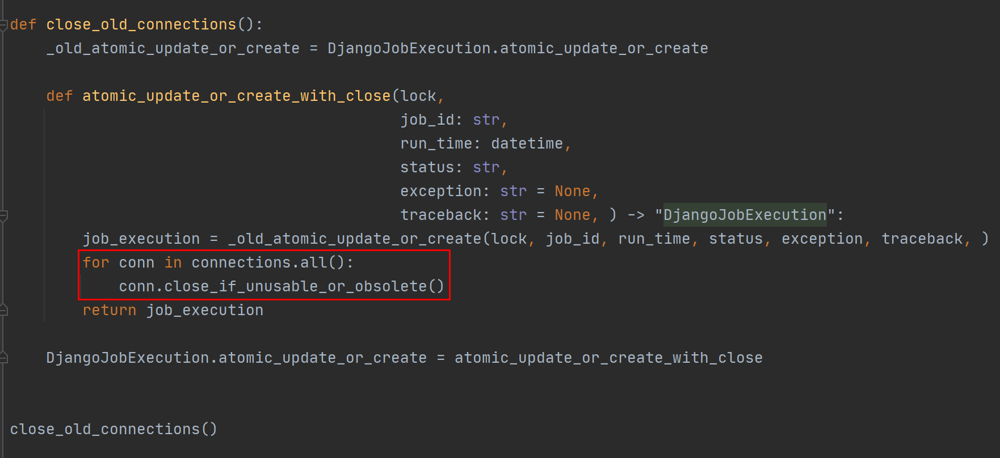
并且通过 issue 方式，告诉了它的作者：

这开启了我在 GitHub 上英文交流技术的大门。
比如我又给 loguru 提了个 bug，此时已经和 loguru 的作者英文交流了 5 个回合。
小结
本文给测试计划添加了定时任务功能，为 teprunner 测试平台补上了一块重要拼图。从此它不但能批量执行用例了，还能按照计划时间，定时执行，实现了真正的自动化。